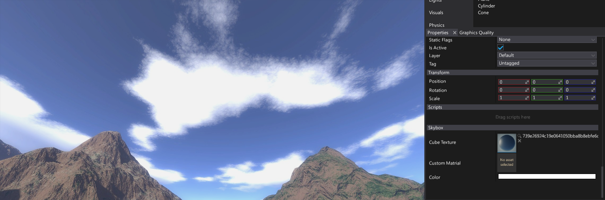
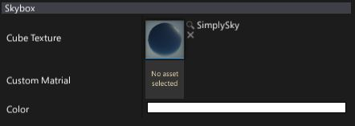
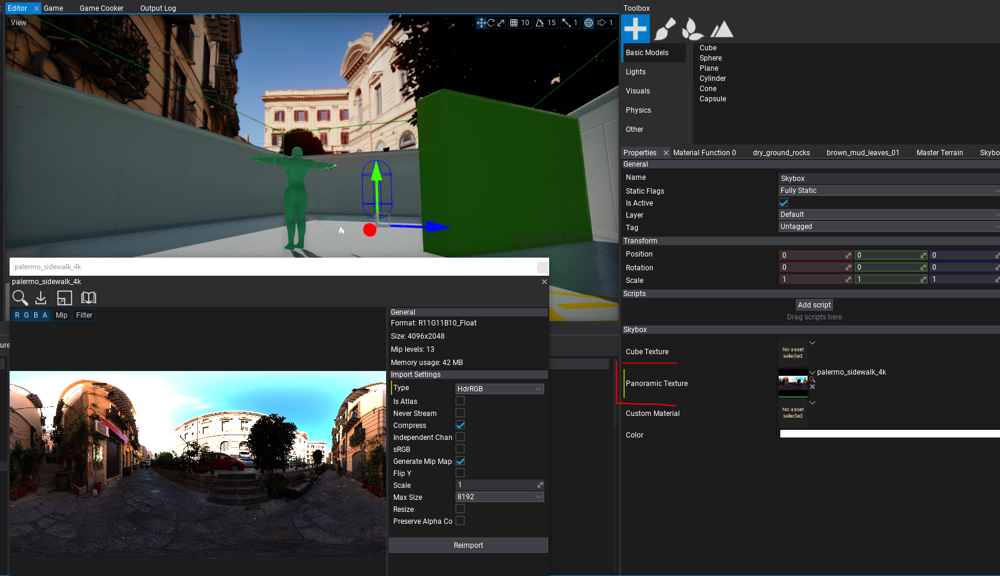
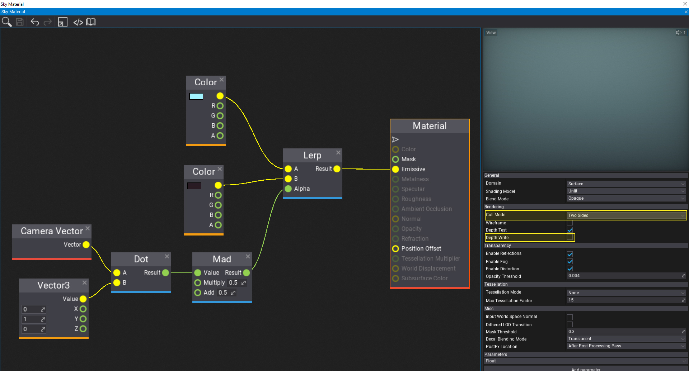

Skybox

Using a Skybox creates a background for your scene. Typical skybox contains skies, clouds, mountains, and other distant scenery. Skyboxes use pre rendered cube textures or panoramic texturs.
Note
To learn more about importing and using cube textures see related documentation page here.
Properties

| Property | Description |
|---|---|
| Cube Texture | The cube texture to draw. |
| Panoramic Texture | The panoramic texture to draw. It should have a resolution ratio close to 2:1. |
| Custom Material | Custom material asset to override the default one. |
| Color | Skybox texture color multiplier |
| Exposure | The skybox texture exposure value. Can be used to make skybox brighter or dimmer. |
Panoramic texture

If panoramic texture is assigned it will be mapped into the 360 degree of the sphere. It should have a resolution ratio close to 2:1 - Longitude / Latitude (Panoramic) skybox: 2:1 aspect ratio (eg. 8192/4096, 4096/2048, 2048/1024).
Custom skybox material
By default skybox uses provided cube texture and samples it creating illusion of 3D environment. However, this behaviour can be overridden by specifying a custom material. Then it will be rendered with a sphere model.
To make create such a material ensure to:
- Change Cull Mode to Two Sided
- Uncheck Depth Write option
When editing shader in Material Window you can uncheck Show -> Default Scene for better live preview.
Here is a sample material that can be used for a simple 2-gradient sky:
